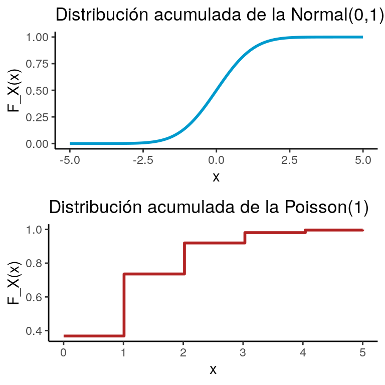
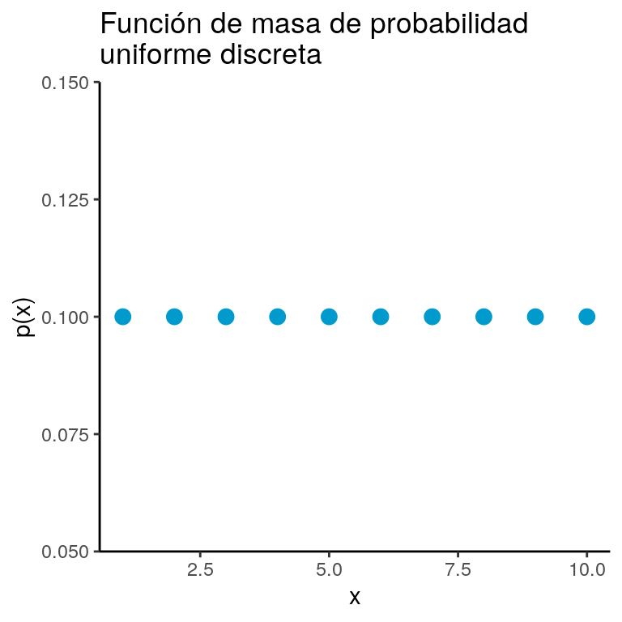
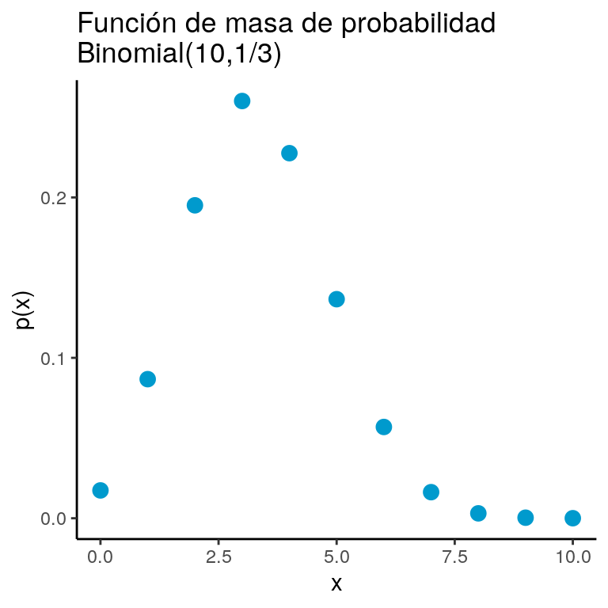
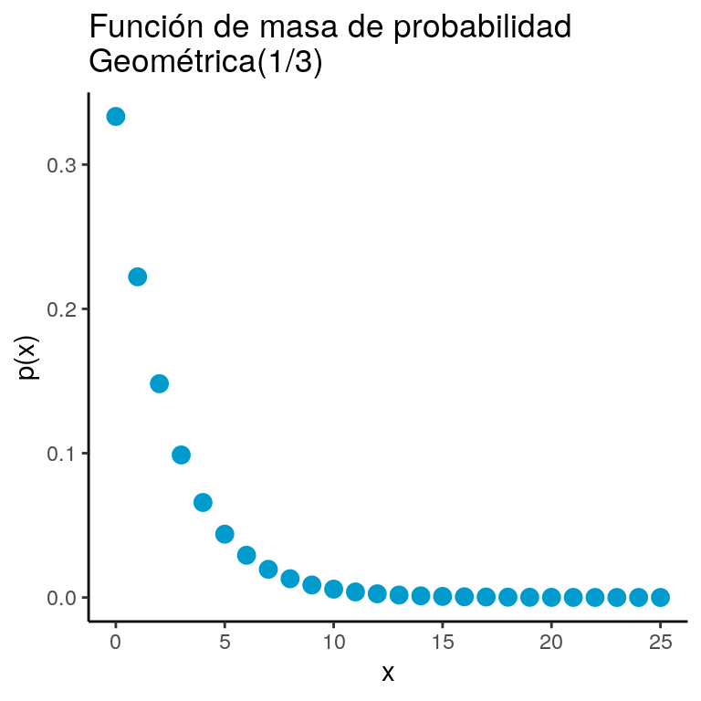
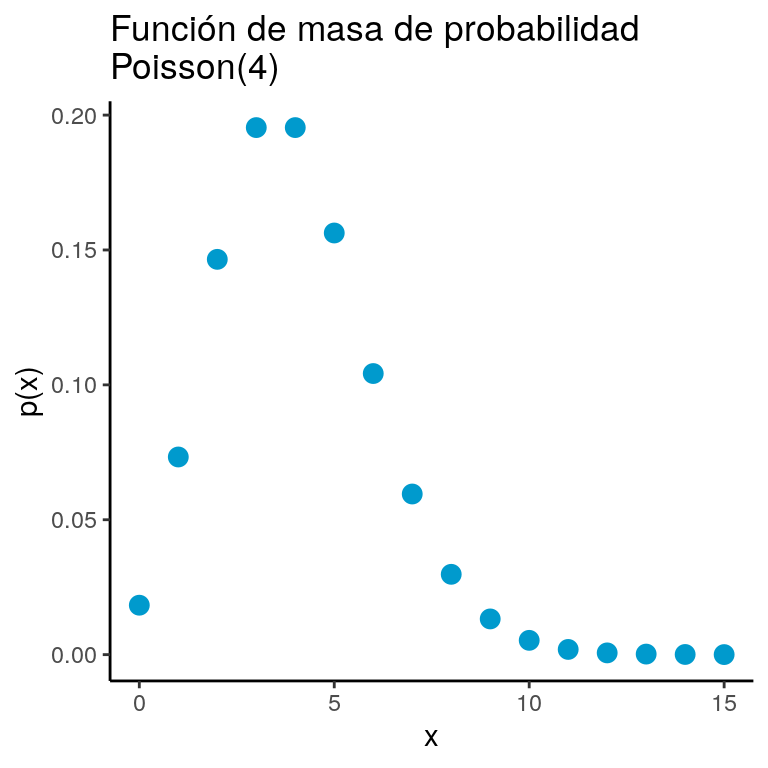
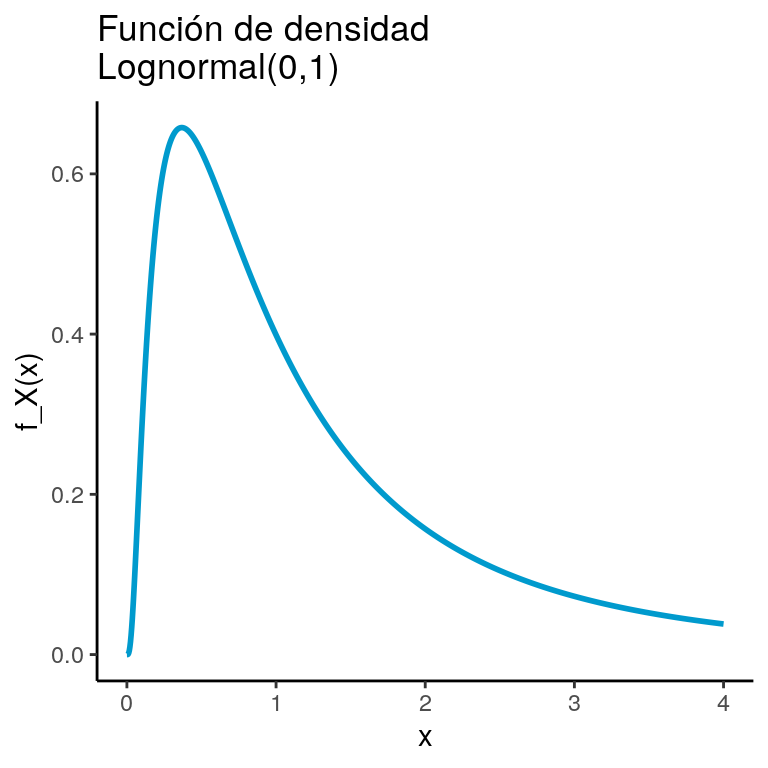

Dado un conjunto \(A\) definimos la función indicadora de \(A\) como sigue: \[ \mathbb{I}_A (x)= \begin{cases} 1 & \text{ si } x \in A\\ 0 & \text{ si } x \not\in A \end{cases} \]
La función indicadora cumple las siguientes propiedades:
Intentemos resumir todas las formas de contar que tenemos con un ejemplo.
En la lotería de Nueva York se eligen \(6\) de \(44\) números para un ticket. ¿Cuántos boletos de lotería posibles hay?
Veamos todas las formas posibles de solución:
Ordenado y sin reemplazo Si sólo importa el orden y una vez que sale un número no se vuelve a meter a los posibles entonces tenemos: \[ \frac{44!}{(44-6)!} \]
Ordenado y con reemplazo En cada uno de los \(6\) lugares hay \(44\) números posibles: \[ 44^6 \]
Sin orden y sin reemplazo Esto es una combinación por lo que la forma de extraerlo es: \[ \binom{44}{6} \]
Sin orden y con reemplazo Para resolver este caso podemos usar la técnica de las barras y los puntos. Coloquemos barras y los huecos entre ellas representan cada uno de los \(44\) números. \[\begin{equation}\nonumber |\underbrace{\_}_{1}|\underbrace{\_}_{2}|\underbrace{\_}_{3}|\cdots |\underbrace{\_}_{n}| \end{equation}\] Coloquemos puntos (\(\circ\)) donde estén los números seleccionados. Por ejemplo la siguiente representa la combinación \(113555\) \[\begin{equation}\nonumber |\underbrace{\circ \circ}_{1}|\underbrace{\_}_{2}|\underbrace{\circ}_{3}||\underbrace{\_}_{4}|\underbrace{\circ \circ \circ}_{5}|\cdots |\underbrace{\_}_{n}| \end{equation}\] Tenemos entonces que el problema se reduce a colocar \(n - 1= 43\) barritas (son un total de \(45\) pero la primera y la última no deben cambiar de lugar) y \(k = 6\) círculos por tanto colocamos \(49\) elementos en total. De estos, nos interesa poner \(6\) por lo que tenemos: \[ \binom{44 + 6 - 1}{6} \] formas distintas. Esto nos lleva a la tabla siguiente:
| \(\quad \text{Con Reemplazo}\) | \(\quad \text{Sin Reemplazo}\) | |||
| \(\quad \text{Con Orden}\) | \(\quad n^k\) | \(\quad (n)_k\) | ||
| \(\quad \text{Sin Orden}\) | \(\quad \binom{n+k-1}{k}\) | \(\quad \binom{n}{k}\) |
Los ingredientes para un modelo probabilístico son \(3\):
Un conjunto \(\Omega\) conocido como espacio muestral el cual es el conjunto de los resultados de interés. Por ejemplo, en el tiro de un dado \(\Omega = \{1,2,3,4,5,6\}\), para el lanzamiento de una moneda \(\Omega = \{\text{Águila},\text{Sol}\}\) o bien en seleccionar un número uniforme entre \(0\) y \(1\) tenemos que \(\Omega = [0,1]\).
Una colección \(\mathcal{F}\) de subconjuntos de \(\Omega\) conocida como sigma-álgebra o bien como espacio de eventos la cual cumple las siguientes características:
Generalmente identificamos a la \(\mathcal{F}\) con el potencia para conjuntos \(\Omega\) finitos; para casos infinitos el teorema de Vitali nos dice que las cosas son más complicadas.
Estos últimos tres puntos se conocen como Axiomas de Kolmogorov. Una vez armados con los axiomas podíamos empezar a probar cosas con ellos; por ejemplo:
Muchas veces la probabilidad cambia conforme obtenemos información extra. Por ejemplo, si consideramos los tiros de un dado \(\Omega = \{1,2,3,4,5,6\}\) y se sabe que cayó par \(B = \{2,4,6 \}\), la probabilidad de obtener \(2\) ó \(4\) (el evento) \(A = \{ 2, 4\}\) cambia de probabilidad: \[ \mathbb{P}(A | B) = \dfrac{\mathbb{P}(A \cap B)}{\mathbb{P}(B)} \]
En particular hay dos teoremas principales con probabilidad condicional: la ley de probabilidad total que te permite reconstruirlas probabilidades originales a partir de las condicionales y el de Bayes.
El teorema de Bayes puede deducirse a partir de un simple despeje pues notamos que: \[ \mathbb{P}(A | B) = \dfrac{\mathbb{P}(A \cap B)}{\mathbb{P}(B)} \] y por otro lado: \[ \mathbb{P}(B | A) = \dfrac{\mathbb{P}(A \cap B)}{\mathbb{P}(A)} \] Si despejamos del segundo, obtenemos: \[ \mathbb{P}(B | A)\mathbb{P}(A) = \mathbb{P}(A \cap B) \] Podemos sustituir la definición de intersección en \(\mathbb{P}(A|B)\) y así obtener: \[ \mathbb{P}(A | B) = \dfrac{\mathbb{P}(B | A)\mathbb{P}(A)}{\mathbb{P}(B)} \]
Por otro lado, dada una partición \(B_1, B_2, \dots\) finita o numerable de \(\Omega\) podemos definir la probabilidad de \(A\) en términos de cada uno de los pedazos:
\[ \mathbb{P}(A) = \sum\limits_{k} \mathbb{P}(A | B_k) \cdot \mathbb{P}(B_k) \]
Esta identidad se sigue de que: \[ \mathbb{P}(A | B_k) = \dfrac{\mathbb{P}(A \cap B_k)}{\mathbb{P}(B_k)} \]
de donde podemos sustituir arriba y obtener: \[ \mathbb{P}(A) = \sum\limits_{k} \dfrac{\mathbb{P}(A \cap B_k)}{\mathbb{P}(B_k)} \cdot \mathbb{P}(B_k) = \sum\limits_{k} \mathbb{P}(A \cap B_k) = \mathbb{P}\big(A \cap (\bigcup_k B_k) \big) = \mathbb{P}\big(A \cap \Omega \big) \]
Tenemos entonces el teorema:
Usando probabilidad condicional podemos resolver problemas como el siguiente:
Dos eventos \(A,B\) son independientes si: \[ \mathbb{P}(A \cap B) = \mathbb{P}(A) \mathbb{P}(B) \]
Intuitivamente esto significa que saber \(A\) no me dice nada de \(B\) pues la independencia implica que: \[ \mathbb{P}(A | B) = \mathbb{P}(A) \]
Para hablar de probabilidad uno de los ingredientes principales eran las variables aleatorias. Éstas son funciones (no son variables ni son aleatorias) de tal manera que su imagen inversa pertenece a la sigma-álgebra \(\mathcal{F}\):
En general la pregunta \(\mathbb{P}(X \in A)\) la traducíamos a una pregunta sobre conjuntos: \[ \mathbb{P}(X \in A) = \mathbb{P}\Big( \{ \omega \in \Omega \quad : \quad X(\omega) \in A \} \Big) \]
y esto nos permitía hablar de probabilidades. En particular, construíamos la función de distribución acumulada como sigue:
La función de distribución acumulada cumplía varias propiedades:
Los puntos 4 y 5 se resumen diciendo que la función es càdlág.
Tener la acumulada nos permitía calcular probabilidades de intervalos; por ejemplo: \[ \mathbb{P}(a < X \leq b) = F_X(b) - F_X(a) \] o bien: \[ \mathbb{P}(X < x) = \lim_{z \to x^-} F(z) \]
Las funciones de distribución acumulada más comunes se veían como en la imagen:

Si una función de distribución acumulada \(F_X\) era continua entonces decíamos que la variable aleatoria asociada (\(X\)) es continua. En particular, la continuidad implica que: \[ \mathbb{P}(X = k) = 0 \qquad \forall k \]
Si una variable aleatoria \(X\) tomaba una cantidad finita o numerable de valores decíamos que \(X\) es una variable aleatoria discreta. Dentro de las variables aleatorias discretas teníamos varios modelos. Una cosa importante de las variables aleatorias es la función de masa de probabilidad que se define como:
Algunos modelos importantes son:

Un modelo particular salía de considerar el siguiente problema:
Tenemos una moneda que cae Águila con probabilidad \(p\) y Sol con probabilidad \((1-p)\) (con \(0 < p < 1\)). Nos interesa saber cuál es la probabilidad de tener \(k\) Águilas en \(n\) tiros.
A fin de resolver este problema notamos que necesitamos acomodar las \(k\) águilas en los \(n\) tiros para ello hay \(\binom{n}{k}\) formas de hacerlo; cada águila cae con probabilidad \(p\) y hay \(k\); como son independientes esto nos da \(p^k\); por otro lado hay \(n-k\) soles cada uno cayó con probabilidad \((1-p)\). Esta lógica da origen al modelo binomial:

Una pregunta distinta que nos pudimos hacer fue:
Tenemos una moneda que cae Águila con probabilidad \(p\) y Sol con probabilidad \((1-p)\) (con \(0 < p < 1\)). Arrojamos la moneda hasta obtener \(r\) Águilas y en ese momento nos detenemos. Determina la probabilidad de que se aviente la moneda \(k\) veces.
Para ello notamos que la última Águila está fija por lo que sólo debemos poner las \(r-1\) Águilas en los \(k-1\) lugares restantes, \(\binom{k-1}{r-1}\). Por otro lado, cada Águila tiene probabilidad \(p\) y como son \(k\) tiros independientes entonces tenemos \(p^r\); para los soles tenemos \((1-p)^{k-r}\). Esto nos genera el modelo Binomial Negativo:
Finalmente, otro modelo que pudimos hacer con monedas es un caso específico del Binomial Negativo . Aquí la pregunta es, se tira una moneda que tiene probabilidad \(p\) de salir Águila hasta que se obtiene el águila. Contamos cuántos tiros ocurrieron hasta que ocurriera el primer Águila y la pregunta de interés es la probabilidad de haber realizado específicamente \(k\) tiros. Para ello necesitamos tener \((k-1)\) tiros que fueran sol: \((1-p)^{k-1}\) y un tiro que saliera águila \(p\). Esto nos genera el modelo geométrico:

Otro modelo de interés es el siguiente:
Se tiene una población de tamaño \(M\) donde \(N\) individuos pertenecen al partido político AZUL y \(M-N\) pertenecen al VERDE Se toma una submuestra de tamaño \(m\). Determina la probabilidad de que haya \(n\) individuos del partido político AZUL.
Para ello notamos que hay \(\binom{M}{m}\) muestras totales. Por otro lado, necesitamos extraer de los \(N\) azules a una submuestra de \(n\): \(\binom{N}{n}\); finalmente, de los \(M\) verdes necesitamos extraer una submuestra de \(m\), hay \(\binom{M-N}{m-n}\) formas de hacerlo. Concluimos entonces con el modelo hipergeométrico:
El modelo Poisson va a ser bastante útil. Para estudiarlo, consideremos un modelo. Vamos a pensar en un servidor de computación (piensa en una página de Internet) que recibe solicitudes de entrar a la página de manera independiente y aleatoria en un intervalo de tiempo entre \(t = 0\) y \(t = 1\). Como primera aproximación podemos dividir el intervalo en \(n\) pedazos cada uno de longitud \(1/n\) y asumir que, a fuerza, sólo una conexión se puede realizar en cada uno de esos pedazos. Finalmente, asumamos que la probabilidad \(p\) de que se haga una conexión es proporcional a la longitud del intervalo y sea \(p = \lambda / n\). Con estas hipótesis, la probabilidad de tener \(k\) conexiones (\(k\) entero entre \(0\) y \(n\)) está dada por un modelo binomial: \[\begin{equation}\nonumber \begin{aligned} f_n(k) & = \binom{n}{k} \Big( \frac{\lambda}{n} \Big)^k \Big(1 - \frac{\lambda}{n} \Big)^k \\ & = \frac{\lambda^k}{k!} \Big( 1 - \frac{\lambda}{n})^n \frac{n!}{n^k(n-k)!} \Big( 1 - \frac{\lambda}{n})^{-k} \end{aligned} \end{equation}\] de donde concluimos que si continuamos partiendo el intervalo en pedazos cada vez más pequeños obtenemos: \[\begin{equation}\nonumber \begin{aligned} \lim_{n \to \infty} f_n(k) & = \frac{e^{-\lambda} \lambda^k}{k!} \end{aligned} \end{equation}\] Esto resulta en el modelo Poisson:

Por construcción, las variables aleatorias continuas no tienen una función de masa de probabilidad (recuerda que \(\mathbb{P}(X = k) = 0\) si \(X\) es continua para todo \(k\)). Sin embargo, es posible definir, si \(F_X\) es diferenciable algo similar, la función de densidad.
Notamos que una función de densidad no es una probabilidad y no necesariamente sigue las mismas reglas; lo único que se requiere es:
La primer función de densidad es la que a un intervalo \([a,b]\) (ya sea abierto, cerrado o como sea) asigna a cada subintervalo una probabilidad proporcional a su longitud. Éste es el modelo uniforme:
Una generalización del modelo uniforme es el beta (eventualmente veremos de dónde sale):
Podemos deducir el modelo exponencial a partir de la descripción del Poisson. Volvamos al mismo problema del \(\textrm{Poisson}(\lambda)\) donde hay computadoras conectándose a un servidor. Sea \(W\) la variable aleatoria que denota el tiempo de espera hasta el primer evento. Analicemos su distribución acumulada; notamos que \[ F_W(w) = \mathbb{P}(W \leq w) = 1 - \mathbb{P}(W > w) \] Ahora, para que \(W > w\) eso significa que ningún evento tuvo que haber ocurrido en los primeros \(w\) minutos (horas, lo que sea la unidad de tiempo). Y ese evento es equivalente a que nuestra variable aleatoria Poisson (tasa \(\lambda w\))1 no tenga ningún arribo: \[ \mathbb{P}(X = 0) = \dfrac{(\lambda w)^0 e^{-\lambda w}}{0!} = e^{-\lambda} \] De donde se obtiene la función de distribución acumulada: \[ F_W(w) = 1 - e^{-\lambda w} \] De donde, al derivar respecto a \(w\), se obtiene el modelo exponencial:
Para deducir la distribución gamma, vamos a preguntarnos por exactamente el mismo proceso pero esta vez, en lugar de preguntarnos por el tiempo para la primer conexión nos preguntaremos por el tiempo para la \(\alpha\)-ésima conexión. Para ello, sea \(W_{\alpha}\) el tiempo hasta la \(\alpha\)-ésima conexión. Usamos el mismo truco del complemento que la vez pasada: \[ F_{W_{\alpha}}(w) = \mathbb{P}(W_{\alpha} \leq w) = 1 - \mathbb{P}(W_{\alpha} > w) \] Y notamos que para que \(W_{\alpha} > w\) entonces a lo más debieron haber \(\alpha-1\) conexiones. Podemos reescribir: \[ F_{W_{\alpha}}(w) = 1 - \mathbb{P}(W_{\alpha} > w) = 1 - \sum\limits_{k = 0}^{\alpha - 1} \dfrac{(\lambda w)^k e^{-\lambda w}}{k!} = 1 - e^{- \lambda w} - \sum\limits_{k = 1}^{\alpha - 1} \dfrac{(\lambda w)^k e^{-\lambda w}}{k!} \] Derivamos: \[\begin{equation}\nonumber \begin{aligned} \dfrac{d}{dw}F_{W_{\alpha}}(w) & = -\lambda e^{- \lambda w} - \sum\limits_{k = 1}^{\alpha - 1} \dfrac{k \lambda (\lambda w)^{k-1} e^{-\lambda w} - \lambda (\lambda w)^k e^{-\lambda w}}{k!} \\ & = -\lambda e^{- \lambda w} - \lambda e^{- \lambda w} \sum\limits_{k = 1}^{\alpha - 1} \underbrace{\dfrac{(\lambda w)^{k-1}}{(k-1)!} - \dfrac{(\lambda w)^k }{k!}}_{\text{Telescópica}} \\ & = -\lambda e^{- \lambda w} + \lambda e^{- \lambda w} \Bigg( \dfrac{(\lambda w)^{\alpha - 1} }{(\alpha - 1)!} - 1 \Bigg) \\ & = \lambda e^{- \lambda w} \dfrac{(\lambda w)^{\alpha - 1} }{(\alpha - 1)!} \\ & = \dfrac{\beta^{\alpha} }{\Gamma (\alpha)} w^{\alpha - 1} e^{- \frac{w}{\beta}} \\ \end{aligned} \end{equation}\] donde tomamos \(\beta = \frac{1}{\lambda}\). Esto sugiere el modelo gamma:
Para deducir el modelo normal consideremos lo siguiente. Pensemos que estamos midiendo la posición de las estrellas en el cielo. Para ello hay dos formas. Bajo coordenadas cartesianas \((x,y)\) pensemos que el error de medición es independiente; es decir, si \(f(x,y)\) es la densidad de los errores entonces:
\[ \rho (x,y) = f(x) f(y) \]
Por otro lado, asumamos que existe también una representación en coordenadas polares de la posición de la estrella: \[ g (r, \theta) = g(r) \] donde el error de medición depende sólo del radio (no del ángulo). Notamos entonces que: \[ f(x) f(y) = g\Big( \sqrt{x^2 + y^2} \Big) \] Si tomamos \(y = 0\) tenemos que \(f(x) f(0) = g(x)\) (asumo \(x > 0\); los otros casos son similares). Podemos entonces sustituir:
\[ \dfrac{f(x) f(y)}{f(0)^2} = \dfrac{f\Big( \sqrt{x^2 + y^2} \Big) }{f(0)} \]
Tomamos logaritmo: \[ \ln \dfrac{f(x)}{f(0)} + \ln \dfrac{f(y)}{f(0)} = \ln \dfrac{f\Big( \sqrt{x^2 + y^2} \Big) }{f(0)} \] Notamos que una solución es que: \[ \ln \dfrac{f(x)}{f(0)} = \alpha x^2 \] de donde despejamos y obtenemos: \[ f(x) = \frac{1}{f(0)} e^{\alpha x^2} \] Finalmente sabemos que debe integrar a \(1\) y por tanto esto fuerza a \(\alpha\) a ser negativo. En particular tomaremos \(\alpha = -\frac{1}{2}\) \[ f(x) = \frac{1}{f(0)} e^{-\frac{1}{2} x^2} \] Y para que integre a \(1\):s \[ f(x) = \frac{1}{\sqrt{2 \pi}} e^{-\frac{1}{2} x^2} \]
Por último, notamos que si \(Z\sim \textrm{Normal}(0,1)\) entonces \(X = \sigma Z + \mu\) tiene la densidad dada por2: \[ f(x) = \frac{1}{\sqrt{2 \pi \sigma^2}} e^{-\frac{1}{2\sigma^2} (x - \mu)^2} \]
Supongamos que tenemos una variable aleatoria \(X\) y nos interesa ver cómo se ve la \(X\) después de aplicarle una función \(\phi\). Por ejemplo, si \(X\sim\textrm{Normal}(0,1)\) la función de densidad de \(e^X\) está dada por:
\[ f_X(x) = \dfrac{1}{x \sqrt{2 \pi \sigma^2}}e^{-(\ln(x) - \mu)^2/2\sigma^2} \mathbb{I}_{(0,\infty)}(x). \]
Lo cual cambia mucho la forma de la distribución:

La pregunta es, cómo obtener la función de densidad de \(X\) si se conoce la función \(\phi\); el teorema de cambio de variable nos da una respuesta cuando \(\phi\) es monótona estrictamente creciente o bien estrictamente decreciente y diferenciable.
Determina \(\text{Var}(\mathbb{I}_A(X))\) para cualquier variable aleatoria \(X\) (donde asumimos \(A \in \textrm{Dom}_X\) y todo está bien definido).
Considera el conjunto \(C = \{1,2,\dots, n\}\) para \(n \geq 2\). Se extraen dos números \(a\) y \(b\) (primero el \(a\) y luego el \(b\)) con reemplazo. Determina la probabilidad de que \(a > b\). Inspírate en el ejemplo de estas notas .
Dos personas, Alicia y Bob juegan a la lotería. La lotería se juega todos los miércoles y, en cada juego, la probabilidad de que un billete de lotería específico resulte ganador es \(p\). Alicia, cada miércoles, compra \(2\) billetes mientras que Bob compra \(3\). Todos los billetes de lotería son distintos y sólo uno es el ganador. Determina la probabilidad de que Alicia gane la lotería antes de que Bob lo haga. Inspírate en el ejemplo de estas notas .
Sea \(X \sim \textrm{Normal}(0,1)\). Determina la densidad de \(X^2\). OJO No necesariamente aplica el teorema de cambio de variable pero sí la técnica usada para probarlo.
Sea \(X\sim \textrm{Exp}(\lambda)\), determina la densidad de \(\sqrt{X}\). OJO No necesariamente aplica el teorema de cambio de variable pero sí la técnica usada para probarlo.
Sea \(X\sim \textrm{Unif}(0, 2\pi)\), determina la densidad de \(\cos(X)\). OJO No necesariamente aplica el teorema de cambio de variable pero sí la técnica usada para probarlo.
Demuestra el Teorema de Cambio de variable para el caso estrictamente creciente.